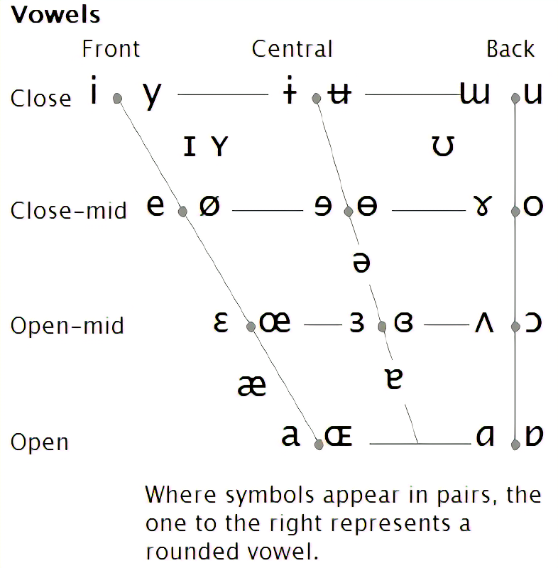

拉丁语第一课：发音
首先，掌握拉丁语的发音是不重要的（尤其是在这篇博文所在的古文字学语境之下），这和学习大部分语言不一样。拉丁语在今天已经不再被人们日常使用，如何读写拉丁语才是重中之重。不过，这显然不适用于维真古典学院（Accademia Vivarium Novum），同样，对于那些有志于演唱中世纪圣咏的人来说，掌握拉丁语的发音无疑是必要的。这里将要介绍的是拉丁语的古典式发音。
值得庆幸的是，pronuntiatio Latina est facilis（拉丁语发音是简单的）。除了真正没有任何例外，做到了言文一致的少数语言（比如逻辑语），相较于英语这种有着大量例外读音的语言，拉丁语发音可以说是相当简单。因此，无需担心会在拉丁语发音时产生困难。
元音
为了严谨考虑，先上一张 IPA 的元音表。

- A 在发长音的时候，发 /ɑ/（例如 father）。发短音的时候在不同教材中有不同说法，故而参考 Vox Latina 这本相对权威的拉丁语语音研究著作。 Vox Latina (2nd Edition, 1978) 中指出，cup 中的发音与短音 A 是相似的，同时对短音 A 发 /ə/ 音提出批评，“English speakers need to take special care not to reduce unstressed short vowels to the 'neutral' vowel /ə/”（p. 50）。这种批评在英国是成立的，但是在美国不成立，AAT（American Accent Training 4th）中指出，对于 /ə/ 和 /ʌ/，“There is a linguistic distinction between the two, but they are pronounced exactly the same.”（p. vii），所以，既然发 /ʌ/ 没有问题，那么对于美国人来说，发 /ə/ 也是没有问题的。这说明在使用美国的拉丁语教材，诸如韦洛克等教材的时候要尤其注意发音问题。
- E 在发长音的时候，发 /eɪ/（例如 fate，they，cake）。在发短音的时候，发 /e/（例如 get，pet）。
- I 在发长音的时候，发 /i/（例如 machine，feet）。在发短音的时候，发 /ɪ/（例如 kin，fit，pin）。
- O 在发长音的时候，发 /oʊ/（例如 go，hope，clover）。同样因为各个教材的分歧而查阅 Vox Latina (2nd Edition, 1978)，其中指出，“ ...and short e and o were similar to the vowels of pet and pot”（p. 50），容易知道 pot 中的发音为 /ɒ/，故而短音 O 应该发 /ɒ/ 音。
- U 在发长音时发 /u/（例如 food，fool，rude）。在发短音时发 /ʊ/（例如 book，put）。
- Y 发音规则和 I 等同，它只会出现在一些拉丁语的古希腊语借词之中。
双元音
- ae 发音为 /aɪ/（例如 ice，high，aisle）。
- au 发音为 /aʊ/（例如 house，howl，how）。
- ei 发音为 /eɪ/ （例如 reign，day）。
- eu 发音是 e 和 u 的结合，参考上文中的元音读法。
- oe 发音为 /ɔɪ/（例如 oil，boy）。
- ui 发音为 /wɪ/（例如 twin）。
辅音
拉丁语的辅音相对元音更加简单。大部分教材都指出它们和英语发音基本一致，只有一些需要注意的地方：
- b 和英语中发音一样，但是 bs 和 bt 需要发音为 ps 和 pt。
- c 永远发 k 音。
- g 永远发硬音，如 get 中一样。
- h 必须发音，这是一个送气音。
- i 在作为辅音时，发音如同 yawn。有几种情况：如果 i 在词首并且后面跟着元音，那么此时 i 发辅音；如果 i 在词中且前后都是元音，此时也发辅音；还有一种情况是，满足第一种情况的 i 所在的词作为词根参与复合词的建构导致 i 居于词中，而不满足第二种情况，这种时候不影响 i 的发辅音（例如 iniustus 由 in + iustus 建构而来，这里后一个 i 发辅音）。有一些例外情况来自于拉丁语中的古希腊语借词，此时满足第一种情况的 i 有可能也需要发元音。
- n 和英语中发音类似，需要注意 nc 发音与 bank 中一样，ng 发音和 hang 中一样。
- qu 作为一个辅音存在，发音与英语 quit 中一样。
- r 要发舌颤音。
- s 永远是清辅音。
- v 发音永远和 wet 中一样。
- x 发音为 ks，和 axe 中一样。
- z 发音为 dz，和 gadzooks 中一样。
- ch 发音和 character 中一样。
- ph 发音和 people 中一样。
- th 发音和 tea 中一样。
音节
首先需要学习音节的划分。有以下规则：
- 一个辅音与紧随它的元音相连。例如 anima 应该被划分为 a/ni/ma。
- 如果有两个或者更多辅音连在一起，那么最后一个辅音应该跟随下一个音节。例如，sanctus 应该被划分为 sanc/tus，其中相连的 nct 中的 t 被划归下一个音节。
- 一个塞音（c，k，t，p，ch，th，ph，g，d，b）或者一个擦音 f 后接一个流音（l，r），那么这两个辅音处于同一个音节。举例来说，patria 必须被划分为 pa/tri/a。
只有词末倒数第二个音节或者第三个音节会被重读。显然，如果一个词只有两个音节，那么重度的只能是倒数第二个音节。那么如果一个词有两个以上的音节呢？也很简单：
- 首先判断倒数第二音节是不是长音节：
- 如果有一个长元音或者一个双元音，那么这个音节就为长音节。（称之为自然为长）
- 如果这个音节有两个以上的辅音，那么这个音节也是长音节。（称之为凭位为长）
- 如果是长音节，那么就重度；如果不是，那么重度倒数第三个音节。
没错，规则相当简单，不需要多久就可以习惯。